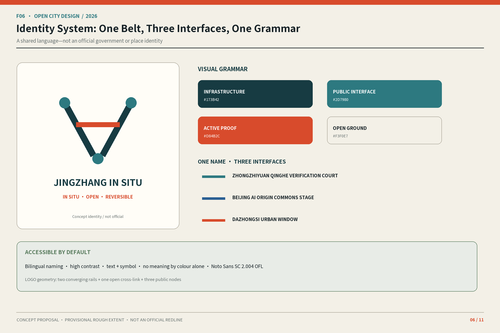
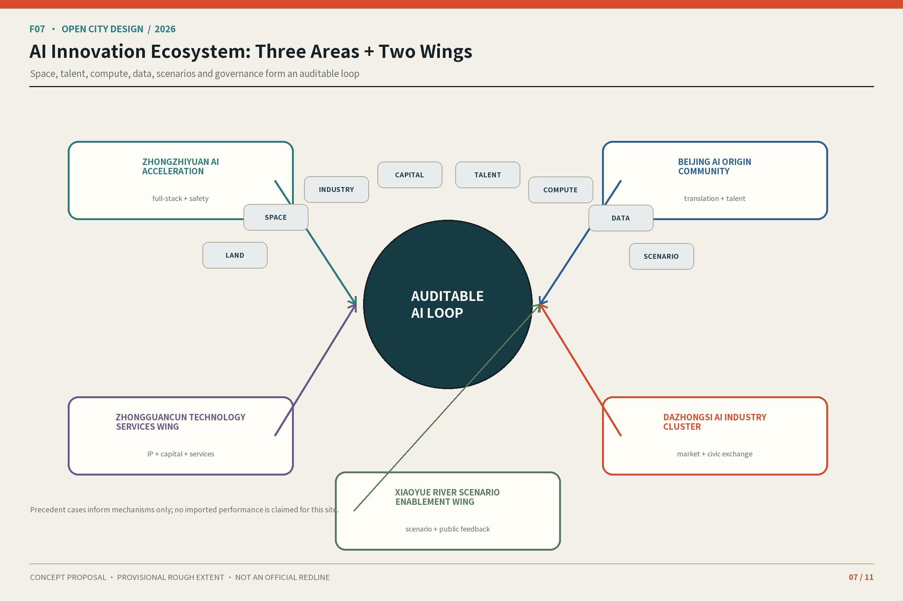
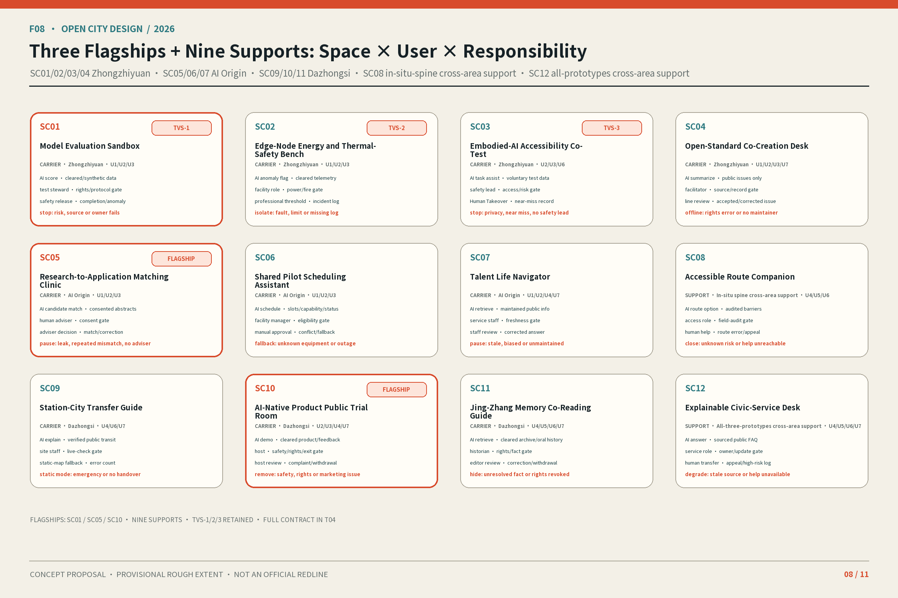
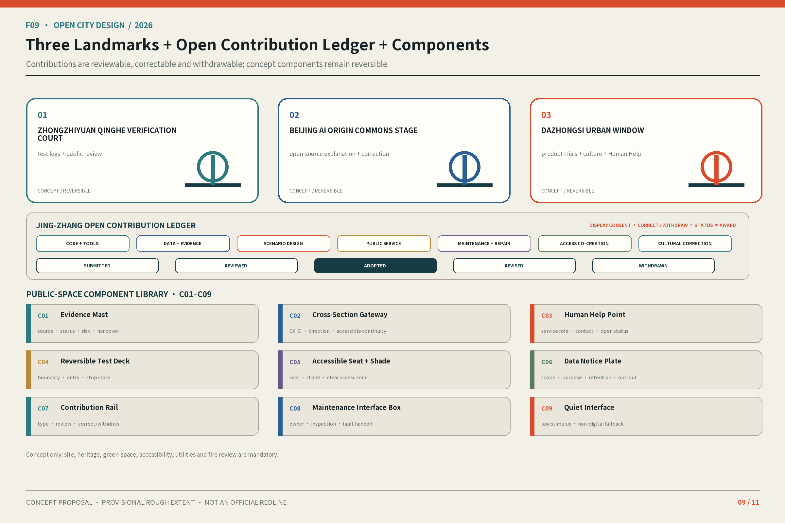
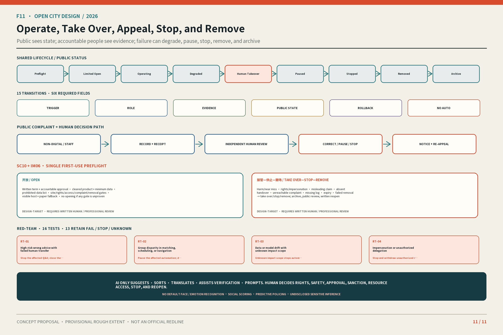

Jing-Zhang In Situ: Making AI Visible, Human-Takeover-Ready, Verifiable, and Withdrawable
One in-situ spine, three in-situ prototypes, twelve candidate responsibility cross-sections, and one time-bounded reversible first-use trial turn AI into urban interfaces that people can see, take over, verify, and withdraw.
Review routes and unified legend
京张在场 / Jing-Zhang In Situ · One canonical project name, locked bilingually.
30 seconds · project → three kinds of presence → three prototypes → AI authority → Human Takeover / removal
- Known / recomputable
- Provisional constraint
- Unknown / pending
- Design target
- H · Human Takeover
- X · Stop / remove
Jing-Zhang In Situ: Making AI Visible, Human-Takeover-Ready, Verifiable, and Withdrawable
Thesis: Jing-Zhang In Situ turns AI from a hidden capability into three urban interfaces that the public can see, take over, verify, and withdraw. People present, evidence present, and responsibility present form one evaluation test: can people enter and appeal; can they trace sources and failures; and can they find an accountable person who restores a human service or removes the intervention? This remains an open-co-creation conceptual recommendation, not an approved plan, government commitment, or engineering conclusion.
Four primary messages organize the submission: (1) the threefold presence test; (2) one in-situ spine + three in-situ prototypes + twelve candidate responsibility cross-sections; (3) three flagship scenarios, SC01/SC05/SC10, + nine supporting scenarios; and (4) seven action packages + one time-bounded reversible first-use trial. The 30-second path is F01→F03→F08→F11; the three-minute path checks space, scenario, and withdrawal along the same route; the fifteen-minute path then opens F02/F04/F05/F06/F07/F09/F10, T01–T07, matrices, and sources.
Design Basis and Source List
The announcement, agent taskbook, public site package, source registry, and local professional-standard snapshots define the task and the permissible strength of claims. Processed material is navigation, not substitute evidence.Source Source Source
The Phase 2 source freeze records publisher, URL/file, publication or retrieval date, spatial and temporal scope, reuse boundary, acquisition-to-transformation chain, SHA-256, evidence grade, limitations, and prohibited uses for every item. Existing repository snapshots remain governed by their item-level rights records; URL-only cases retain links and paraphrase only. OSM retains only the 2026-08-14 background check’s query/response hashes and the warning that the raw response is absent and not package-replayable. It never enters required design GeoJSON or becomes a surveying claim.Source Spatial data
The organizer has not supplied official polygons for the three scope levels or three key areas. SITE and KEY_AREA are rough provisional constraints usable only for generation, intake checks, and scenario comparison. They do not establish a redline, ownership, approval, statutory land use, precise area, or feasibility. Official boundaries must trigger one-batch recalculation of all nine geometry layers, metrics, F01–F11, HTML, and PDFs.Source Spatial data
Regulatory plans, parcel rights, building surveys, structure, fire, daylight, utilities, heritage, road sections, flows, parking, municipal capacity, enterprise/talent baselines, and field surveys remain unavailable. The proposal therefore does not fill unknown FAR, height, density, demolition, redlines, cost, bridge/tunnel, underground, or approval claims.Standard Depth
 Enlarge original F01 and read its semantic summary
Enlarge original F01 and read its semantic summary
The extent is a constraint; the collaboration loop is the main story.
Activate this summary again to close; the expanded region is a horizontally scrollable 200% original.
Three-Level Scope Framework
Overall concept, naming, and visual identity
“Jing-Zhang” anchors railway heritage, spatial continuity, and public memory. “In Situ” requires people to enter, evidence to remain traceable, and responsibility to take over. The brand contract defines Jing-Zhang In Situ as the only canonical English name. F06 may omit the hyphen only as a graphic logo treatment; prose, metadata, titles, and external naming may not turn that treatment into a second unhyphenated project name. The name means learning and correcting on site, not claiming implementation. F06 uses two tracks, twelve ticks, three nodes, and open arcs to represent one belt, twelve cross-sections, three zones and two wings, and revisable interfaces. It uses no corporate mark or unauthorized railway identity.Standard Depth

Enlarge original F06 and read its semantic summary
The shared language supports recognition, takeover, verification, and withdrawal without implying official identity.
Activate this summary again to close; the expanded region is a horizontally scrollable 200% original.
Three Positionings, Five Functions, and Three Zones and Two Wings
The three positionings are a Century-Old Jing-Zhang Cultural Belt, an Urban AI Life-Experience Belt, and an AI Convergence-Innovation Belt. T01 translates the five functions into inspectable mechanisms.
| T01 function | Main carrier | In-situ test |
|---|---|---|
| Full-stack independent AI innovation | Zhongzhiyuan | Controlled tests, failure records, human stop |
| World-class AI innovation ecosystem | AI Origin + Zhongguancun wing | Matching, shared pilots, talent support, refusals |
| New AI+ scenario paradigm | Xiaoyue River wing + 12 cross-sections | Public co-test, low-tech alternative, appeal |
| Vibrant AI-enabled city | Park, public ground floors, station-city interfaces | Everyday access, legible status, withdrawal |
| Global voice in AI governance | Shared by three zones | Open sources, responsibility, review, stop |
Twelve Everyday Cross-Sections
The north–south heritage park is the in-situ spine. CX01–CX12 are now locatable, auditable candidate analysis paths; all twelve are candidate_not_surveyed, not engineering alignments, road centerlines, or fieldwork. Each record carries a stable ID, coordinates, type, rationale, primary users, conflict, sources, and a field checklist.Depth Spatial data Spatial data Candidate and surveyed totals return to separate metrics; cross_section_surveyed_count=0 explicitly retains the no-survey adverse result.Metric Metric
CX01–CX12 and SC01–SC12 are separate systems. The types are riverfront R&D, park gateway, research courtyard, campus public ground floor, research translation, talent life, community stitch, Xiaoyue accessible interface, rail–park connection, station-city living room, market–culture ground floor, and quiet care. Only three different types are developed: CX02 park gateway, CX05 research translation, and CX10 station-city living room. Their relational-section widths are all design-target; existing total width and road redline are unknown. The other nine remain candidate inventories.Metric The three representative section anchors follow.Spatial data Spatial data Spatial data
Coordinated Research Area: Industry and Future City Research
Comparative mechanisms from global cases
T02 transfers only registered organizational mechanisms—not numbers, imagery, spatial conclusions, or partnership claims.
| T02 source | Mechanism for discussion | Local question |
|---|---|---|
| Seoul AI Hub | Staged PoC and follow-up interface | How does a test leave review and choices? |
| one-north | Research cluster, living lab, public realm | How can R&D security coexist with access? |
| STATION F / F.ai | Cohort, office hours, access gradients | How are community and space accountable? |
| Maria 01 | Heritage reuse and incremental operation | How does heritage join innovation gradually? |
| Mila | Research, translation, talent, responsible AI | How does public interest enter conversion? |
| Dubai Future Accelerators | Challenge–pilot–evaluation | How does validation gain gates and stops? |
| Marineterrein | Reversible temporary use and exit | How can a failed trial restore the site? |
The first three mechanisms are supported by registered background sources.Source Source Source
Heritage reuse and responsible governance remain background questions.Source Source
Challenge-led validation and reversible temporary use inform only gates.Source Source
Ecosystem map and eight enabling elements
F07 moves land, space, industry, capital, talent, compute, data, and scenarios through research→matching→controlled testing→public co-testing→feedback. Complaints, failures, costs, and revisions return to research. Land, capital, compute, and external regions remain authorization-dependent conditions, not committed resources or partners.Source Depth

Enlarge original F07 and read its semantic summary
Space, talent, compute, data, scenarios, and governance form a gated, auditable loop.
Activate this summary again to close; the expanded region is a horizontally scrollable 200% original.
Overall Design Area: Urban Renewal and Regulatory-Plan-Level Urban Design
Renewal uses three reversible verbs. KEEP retains buildings, mature trees, and services shown by survey to have public value. OPEN unlocks park edges, courtyards, and public ground floors only when rights, safety, and operations permit. INTENSIFY first raises use through shared time and reversible components; it does not presume more development.Standard Source Depth
This differentiated mechanism binds the renewal-space network to the threefold-presence responsibility system: every spatial move must state its public entry, evidence status, accountable role, and restoration path. It does not merely rename conventional zoning with “AI.”
Urban design provides the coordinating frame for planar and three-dimensional space, public space, transport and municipal systems, and city character. This phase translates that frame into auditable design recommendations only; it does not claim that project-specific controls have been approved.Standard Source
Provisional land use tests relationships among public access, innovation services, everyday care, and blue-green continuity. LU-001/LU-002 organize innovation and public interfaces; LU-003/LU-004 organize living and blue-green scenarios. Topological coverage does not prove statutory use.Spatial data Spatial data
The four scenario zones reuse exactly the same shared boundary coordinates: gap and overlap are both 0 sqm. This proves package-partition consistency only; it does not create statutory land use, parcels, regulatory controls, or ownership conclusions.Metric Metric
FAR, height, density, building scale, and permanent construction await official controls and building records.Spatial data Spatial data Depth
 Enlarge original F02 and read its semantic summary
Enlarge original F02 and read its semantic summary
Complete coverage supports recalculation, not statutory zoning or parcels.
Activate this summary again to close; the expanded region is a horizontally scrollable 200% original.
Detailed Design of Key Areas
All three prototypes use one 400 m × 400 m design-target comparison frame and the same plan–relational-section–operating-state legend, but carry different responsibilities. The 400 m dimension is a common drawing frame, not a measured edge. Each area records five background observations and three spatial moves; every dimension is tagged open-data-derived, design-target, or unknown.Depth Metric Metric The spatial-move total is counted separately from structured fields.Metric
Zhongzhiyuan AI Independent Innovation Acceleration Area
Background observations: (1) the announcement names the area and states approximately 192.1 ha (open-data-derived); (2) Phase 1 fixes SC01–SC04 with SC01 flagship (design-target); (3) the brief asks how park-belt and innovation carriers relate; (4) the official polygon, ownership, and road redlines are unknown; and (5) entries, shade, gradients, flows, and accessible continuity were not surveyed. Spatial moves: validation court, park-belt interface, and reversible evidence apron, pairing controlled testing with spectatorship, slow mobility with human help, and equipment with power-off/removal conditions. CX02 is a relational design target; river, energy, fire, and access conditions await verification.Spatial data Spatial data
Beijing AI Origin Community
Background observations: (1) the announcement names the area and states approximately 104.3 ha (open-data-derived); (2) Phase 1 fixes SC05–SC07 with SC05 flagship; (3) translation, talent service, and sharing come from the brief; (4) campus access, ground-floor use, and fire conditions are unknown; and (5) resident, student, researcher, and delivery flows were not surveyed. Spatial moves: open ground-floor loop, research-translation clinic, and care-service node. A human adviser makes referrals while a non-smart entry, quiet bypass, and community hours remain available. CX05 is a relational design target, not an existing or opened condition.Spatial data Spatial data
Dazhongsi AI Industry Cluster
Background observations: (1) the announcement names the area and states approximately 72.0 ha (open-data-derived); (2) Phase 1 fixes SC09–SC11 with SC10 flagship; (3) station arrival, public experience, and cultural expression come from the brief; (4) station interfaces, commercial rights, fire, and removal routes are unknown; and (5) transfer, retail, stall, and cultural-visitor flows were not surveyed. Spatial moves: four-quadrant arrival loop, public trial room, and market–culture interface. The trial room hosts only the single SC10 + IM06 first-use trial. CX10 co-locates arrival, trial, human complaint, and removal without promising underground connection, leasing, or construction.Spatial data Spatial data
Canonical ownership is frozen by enumerated ID: Zhongzhiyuan has SC01, SC02, SC03, and SC04; AI Origin has SC05, SC06, and SC07; Dazhongsi has SC09, SC10, and SC11. SC08 is cross-area accessibility support for the whole in-situ spine, while SC12 is public-service and human-transfer support shared by all three prototypes; neither belongs to a contiguous numbered area.
 Enlarge original F03 and read its semantic summary
Enlarge original F03 and read its semantic summary
Zhongzhiyuan validates, AI Origin translates, and Dazhongsi hosts public trials; all three boundaries are provisional.
Activate this summary again to close; the expanded region is a horizontally scrollable 200% original.
AI Innovation Ecosystem, Personas, and AI+ Scenarios
Seven personas
| T03 ID | Role | Protected entry |
|---|---|---|
| U1 | Researchers and R&D staff | Controlled test, evidence review |
| U2 | Start-up and product teams | Rights, refusal, removal |
| U3 | Operations, safety, professional review | Human takeover, logs |
| U4 | Residents, community workers, merchants | Low-tech fallback, appeal |
| U5 | Children, carers, educators | Supervision, content review |
| U6 | Older and disabled visitors, companions | Accessibility, human help |
| U7 | International developers and visitors | Bilingual status, permission limits |
U6's low-tech fallback uses the policy principle of running traditional service channels in parallel with smart-service innovation as background. It does not prove a Haidian service, demand figure, or implementation commitment; staffing, offline entry, and maintenance responsibility still require scenario-by-scenario verification.Source Depth
SC01–SC12 share one complete operating contract: purpose and spatial carrier; primary and affected users; allowed/prohibited inputs; source and evidence grade; minimum necessary data; output; AI authority; human-only decisions; frontstage notice; lawful basis or no-collection statement; Human Takeover; low/no-AI alternative; complaint and appeal; logging and audit; retention and deletion; lifecycle; evaluation and review; dependencies; qualitative cost; maintenance; and exit. Machine authority lives in visual/assets/phase3-protocol-contracts.json; the prose keeps the review judgment instead of dumping fields. No reachable accountable person, accessible complaint entry, or high-risk closure means no entry or immediate stop.Source Depth
A scenario enters the corresponding scope analysis under the Interim Measures for Generative AI Services only when it actually provides generated text, images, audio, or video to the public within mainland China. Human Takeover, stop, and exit in this proposal remain design-contract safeguards: Article 14 is not expanded into a general opt-out right, and no statutory numeric response deadline is invented from Article 15.Source Depth
The shared state machine uses exactly nine hyphenated IDs: preflight / limited-open / operating / degraded / human-takeover / paused / stopped / removed / archive, connected by 15 authoritative edges rather than one automatic linear chain. Every edge records bilingual trigger, canonical executing roles, evidence, public state, rollback, and prohibited automation. Frozen F10 terms map as follows: preflight = “Conceptual Recommendation / Pending Site Verification”; limited-open = “Controlled Test”; human-takeover = “Human Takeover”; paused = “Paused.” Within one instance, only paused→limited-open permits a limited retest jointly authorized by the named service owner and safety professional. archive is terminal for that run_instance_id; there is no archive→preflight, and any future use creates a new instance beginning at preflight. AI may only suggest, sort, translate, assist verification, or prompt. Implementation approval, rights changes, sanctions, resource denial, stop, and retest are human-only. Default facial/emotion recognition, social scoring, predictive policing, and undisclosed sensitive inference are prohibited.
The three industrial testing-and-validation IDs remain locked: TVS-1 = SC01 model evaluation, TVS-2 = SC02 energy and thermal safety, and TVS-3 = SC03 embodied-AI accessibility co-testing. The 3+9 hierarchy does not remove those three professional validation obligations.
Twelve scenario cards
The three flagships expand that contract into end-to-end sequences and twelve resolvable swimlanes. SC01 Model Evaluation Sandbox runs external provider → data steward → safety professional → affected public; source/protocol failure moves from operating through degraded takeover, and unresolved issues proceed paused→stopped→removed→archive. SC05 Research-to-Application Matching Clinic runs affected user → on-site human service → scenario service owner → independent appeal reviewer; AI only ranks candidates, voluntary summaries can move to paper/counter, and leakage, repeated mismatch, or an absent adviser triggers takeover or pause. SC10 AI-Native Product Public Trial Room stops at limited-open and runs external provider → on-site host → safety professional → complaint lead; harm, rights, misleading claims, absent takeover, or unreachable complaints lead human-takeover→stopped→removed→archive. Every normal, degraded, takeover, and removal path is composed from the same fifteen edges without adding a building, product, or pilot.
| T04 group | Carrier / users | AI and minimum data | Human, low-tech, appeal | Evaluation / exit |
|---|---|---|---|---|
| Flagship SC01 | Zhongzhiyuan; U1/U2/U3 | Evaluation; cleared benchmark, synthetic data, logs | Safety release; offline script; incident log | Protocol/exception/takeover; unresolved issue stops |
| Flagship SC05 | AI Origin; U1/U2/U3 | Matching; voluntary summaries, public needs | Adviser decides; booking ledger; correction | Consent/refusal/mismatch; leak stops |
| Flagship SC10 | Dazhongsi; U2/U3/U4/U7 | Trial; cleared notice, voluntary feedback | Host; paper feedback; complaint | Exit/complaint; dispute removes |
| Support SC02/SC03/SC04 | Zhongzhiyuan; U1/U2/U3/U6/U7 | Thermal safety, accessibility co-test, standards; permitted data | Experts/safety host/facilitator; meter, escort, issue wall | Threshold, near miss, rights, or no maintainer stops |
| Support SC06/SC07 | AI Origin; U1/U2/U3/U4 | Scheduling and life guide; public/voluntary minima | Administrator/service staff; sheet, map, counter | Conflict, discrimination, or expiry downgrades |
| Support SC09/SC11 | Dazhongsi; U4/U6/U7 | Interchange and co-reading; verified transit and cleared archives | On-site/history review; static map and audio-text | Emergency, factual, or rights dispute hides/closes |
| Cross-area support SC08 | In-situ spine; U4/U6/U7 | Accessible route; field-verified path | Service point; paper map and human escort | Unknown route risk or unreachable human help closes |
| Cross-area support SC12 | All three prototypes; U4/U5/U6/U7 | Public FAQ with source and date | Service role; counter and human transfer | Expiry or risky error without transfer downgrades |
The backend boundaries remain explicit. SC02 reads only cleared device telemetry and isolates for exceeded professional thresholds or incomplete logs. SC03 collects voluntary tasks and environmental state, never an identity profile, and stops after a near miss or without a safety host. SC04 summarizes only public standards, issues, and objections; a facilitator verifies each item, and misattribution, rights problems, or no maintainer takes it down.
SC06 handles public time slots, equipment labels, and application state, returning to a manual sheet when permissions conflict. SC07 uses public service information and active choices, pausing for stale, discriminatory, or unmaintained results.
SC09 explains verified public transport information and switches to a static map during emergencies or data error. SC11 uses cleared archives and consented oral material, hiding disputed or withdrawn material. Cross-area SC08 requires a field accessibility audit and never continuously tracks identity; unknown route risk or unreachable human help closes it. All-prototypes SC12 cites dated public FAQs, never final legal, medical, or fire advice, and downgrades when sources or human transfer fail. These nine support scenarios protect the flagships and the whole spine.
Data governance separates six categories: public/repository evidence, operational non-personal data, personal data, sensitive personal data, model inference/scoring, and logs/appeal material. Each records purpose, minimum fields, collector/controller/operator roles, access, retention/deletion, local/remote boundary, audit, appeal, prohibited use, and evidence status. Twelve scenario profiles close those controls through machine-resolvable inheritance plus scenario overrides, while all twelve controllers remain unknown. Nine core paths state no personal data required. Exactly seven narrow conditional paths require prior legal review: SC04 attribution/reply, SC05 user-requested referral, SC06 booking confirmation, SC07 human callback, SC10 complaint reply, SC11 identifiable oral contribution, and SC12 human reply. Their existence never means that core service requires personal data. Sensitive-personal-data minimum fields remain zero and prohibited by default. Every complaint path retains a non-AI entry, receipt, independent human review, outcome notice, and re-appeal by a different person; an unreachable complaint triggers Human Takeover or stop. Older people, disabled people, children, non-smart-device users, non-Chinese speakers, and people refusing AI retain equivalent service, a non-digital entry, human explanation, and exit. This is a design-target service contract, not proof of staffing or completed legal/accessibility review.Source Source
F08 compares AI authority, human-only decisions, visible takeover, low-tech alternatives, and lifecycle/removal across all 12 scenarios without changing SC01–SC12 or carrier mapping.Spatial data

Enlarge original F08 and read its semantic summary
Every scenario states what AI may do, what humans alone decide, how takeover works, the low-tech fallback, and the exit path.
Activate this summary again to close; the expanded region is a horizontally scrollable 200% original.
Land Use, Building Scale, and Retain-Renovate-Demolish Strategy
Land use and buildings remain provisional scenarios. Public ground floors, footprints, permeability, setbacks, roofs, and reversible components may be developed only after rights, structure, fire, daylight, utilities, and heritage checks.Standard Source Depth
The current footprint only recalculates a submitted scenario; it is neither surveyed condition nor approved envelope. Failure of any premise returns the proposal to a public-space or operational test.Spatial data Metric Depth
Development must first align source authority, survey date, current use, rights, accessible entries, structure, and fire conditions for each unit. Until then, map colors are scenarios only. They cannot support total floor area, FAR, coverage, density, acquisition, demolition, extension, or leasing lists.
Transport, Rail, Municipal Infrastructure, and Public Services
Priority is walking, accessibility, cycling, public-transport connection, then necessary vehicles. Station work begins with ground-level legibility and human service. Without redlines, sections, flows, or parking data, no capacity, safety, bridge/tunnel, or underground conclusion follows.Depth Spatial data
Article 39 of the Barrier-Free Environment Construction Law retains on-site guidance and human-operated service only for public-service venues handling matters such as medical care, social security, finance, and living-payment services. Where this proposal carries human help into broader urban interfaces, it is a design target—not a claim that Article 39 applies universally or that venue compliance or an accessibility audit has been completed.Source Depth
Small edge nodes may combine seating, shade, light, and status information, but qualified teams must confirm power, heat, noise, cybersecurity, fire, drainage, and maintenance. Every high-risk service must switch to a human or static mode.
Each cross-section now carries a field checklist: lawful path and ownership, existing width and obstructions, surface and gradient, crossing wait, shade/rest, wheelchair turning, day/night flows, maintenance, and emergency access. A finding becomes survey evidence only after date, method, coverage, consent, and accountable reviewer are registered. All items remain not surveyed in this phase; no capacity, accessibility pass rate, or parking demand is generated.Metric Metric
 Enlarge original F04 and read its semantic summary
Enlarge original F04 and read its semantic summary
All twelve CX candidates remain unsurveyed; only CX02, CX05, and CX10 receive relational design targets.
Activate this summary again to close; the expanded region is a horizontally scrollable 200% original.
Blue-Green Network, Public Space, and Urban Character
Qinghe, Xiaoyue River, the heritage park, and neighborhood shade form a pending field hypothesis for cooling, movement, and encounter. Green/public ratios compare submitted geometry only and are not statutory. AI devices cannot replace canopy, drainage, lighting, seating, tactile paths, or maintenance.Depth Spatial data Metric
Absolute green-space area recalculates the scenario layer only.Metric
Absolute public-space area and ratio likewise recalculate with the provisional boundary.Metric Metric
Three landmarks, the Open Contribution Ledger, and component library
The Zhongzhiyuan Validation Court displays test evidence; the Beijing AI Origin Commons Stage supports open-source explanation and correction; the Dazhongsi City Window connects product trials, culture, and human service. The Open Contribution Ledger records code/tools, data/evidence, scenarios, public service, maintenance, accessibility, and cultural correction. Its only states are submitted, reviewed, adopted, revised, and withdrawn; display never automatically means an award.
C01–C09 are the evidence pillar, cross-section marker, human-help point, reversible test bench, accessible seat/shade, data notice, contribution rail, maintenance box, and quiet interface. They specify function, information, accessibility, and responsibility—not structural or construction feasibility.

Enlarge original F09 and read its semantic summary
Contributions are reviewable, correctable, and withdrawable; conceptual components remain reversible, maintainable, and removable.
Activate this summary again to close; the expanded region is a horizontally scrollable 200% original.
Culture, wayfinding, and international communication
The cultural narrative is origin–presence–co-creation; the spatial storyline is track–interface–echo. F10 has six levels: overall logo, spatial orientation, cultural trace, scenario status, public service, and temporary activity. Fixed status terms are “Conceptual Recommendation,” “Controlled Test,” “Paused,” “Human Takeover,” and “Pending Site Verification.” “24H human service” is prohibited without staffing evidence.
The international line is: “JING-ZHANG IN SITU: A century-old track, open public interfaces, and AI urban co-creation that people can inspect and correct.” Every public communication also states the conceptual status and never implies selection, approval, or construction.
 Enlarge original F10 and read its semantic summary
Enlarge original F10 and read its semantic summary
Jing-Zhang rail memory, Zhongguancun innovation, and transparent AI remain distinct.
Activate this summary again to close; the expanded region is a horizontally scrollable 200% original.
Renewal Projects, Implementation Policy, and Phasing
Near-term work is limited to source baseline, cross-section survey, responsibility protocol, and reversible prototypes. Medium-term discussion of public ground floors, blue-green mobility, components, and landmarks requires rights and professional conditions. Permanent work awaits regulatory, transport, municipal, and engineering studies. Phases are not approvals.Spatial data Depth
Annual operation and conversion pathway
| T05 frequency | Candidate activity | Required evidence / cancellation |
|---|---|---|
| Continuous / monthly | Issue and contribution ledger / public-interface walk | Problem, owner, revision; stop without maintainer |
| Quarterly / half-yearly | Validation open day / public-responsibility review | Test, complaint, takeover; cancel if gate fails |
| Annual | Candidate “Jing-Zhang In Situ Week” and “Global Urban AI Interface Forum” brands | Separate permits, rights, staff; not a government calendar |
The frontstage operating path uses the shared lifecycle. The public first sees the status and human entry; accountable roles then inspect trigger, evidence, and rollback. Complaint/appeal can enter through a counter, paper, telephone, or accessible digital channel, receive a record and receipt, move to independent human review, and end in correction, degradation, pause, stop, or removal with notice of the result. Every numeric response window is a design-target, not a statutory deadline or existing promise. A participant pathway ends with voluntary candidate referral; it promises no job, capital, procurement, space, or endorsement.

Enlarge original F11 and read its semantic summary
Nine states, fifteen transitions, the sole SC10+IM06 first use, complaint and appeal, and thirteen adverse dispositions jointly constrain exit.
Activate this summary again to close; the expanded region is a horizontally scrollable 200% original.
Project implementation table
The front stage shows seven packages. Thirteen per-IM machine objects live at design_depth_matrix.json#/items/11/implementation_projects, each preserving responsible roles, dependencies, qualitative cost, evidence, maintenance, evaluation, Human Takeover, and stop/exit. S/M/L mean research/coordination, reversible operations, and work requiring engineering development—not investment estimates.Depth
| T06 package | Backend IDs | Front-stage action | Gate / withdrawal |
|---|---|---|---|
| AP1 Evidence baseline and recalculation | IM01+IM13 | Lock authority, differences, hashes | Source conflict freezes derived metrics |
| AP2 Cross-sections and responsibility protocol | IM02+IM03 | Survey CX01–12; safeguard cross-area SC08; define human, appeal, stop | No permit or owner means no entry |
| AP3 Zhongzhiyuan prototype | IM04 | Controlled SC01/02/03/04 validation | Professional or safety failure stops |
| AP4 AI Origin prototype | IM05 | SC05/06/07 matching and service | Leak, mismatch, unclear facility returns to human |
| AP5 Dazhongsi prototype | IM06 | SC09/10/11 arrival, trial, and culture | Rights, safety, or complaint failure removes |
| AP6 Public interface and identity | IM07–IM10 | Landmarks, components, wayfinding, ledger, and all-prototypes SC12 | Rights, maintenance, fact, or consent failure removes |
| AP7 Operation and collaboration | IM11–IM12 | Candidate annual activity and external issues | No permit/authorization means no operation/partnership claim |
The single first-use trial still binds only SC10 + IM06. preflight must retain the written term, approval and accountable roles, minimum/prohibited data, product/site/consumer-rights/accessibility/complaint/removal opening gates, staffed Human Takeover, and low-tech fallback; any unverified gate means no opening. During operation, harm or near miss, rights or impersonation, misleading marketing, absent handover, unreachable complaints, missing mandatory logs, or failed removal triggers immediate takeover at a design-target threshold and an accountable human pause/stop decision. Stop disconnects service, seals/deletes governed data, removes visible status and equipment, archives evidence, and publishes a review. Archive never reopens the original instance; only written independent human/professional review, re-evidence of every opening gate, and a new public notice may create a new run_instance_id beginning at preflight. Durations, response windows, and thresholds remain design-target or unknown: this is not SC13, IM14, another pilot, a statutory numeric deadline, an operating commitment, or measured performance.
Sixteen independent adversarial tabletop tests cover wrong advice, bias/inequality, drift, impersonation, malicious input, network loss, power loss, sensor/interface failure, unavailable takeover, accessibility failure, language misdirection, unreachable complaint, removal failure, incomplete logs, rights withdrawal, and authority overreach. Twelve retain fail_stop, unknown_stop, or fail_pause outcomes instead of reporting universal success. Each traces affected SC, protocol fields, F08/F11, prose, and matrices; residual risk and retest conditions remain in visual/assets/phase3-red-team.json. A tabletop result is not field, safety, or legal validation.Depth
Metrics, Area Recalculation, and Compliance Matrix
Phase 2 records 21 known/documented metrics; 19 can be independently recalculated from package GeoJSON and structured fields. Areas and lengths use EPSG:4548 with a ≤0.5% tolerance; counts require exact equality. Every metric follows baseline–action–target or observation window–evidence status–rerun trigger and retains status/value/unit/source_files/formula/confidence/assumptions.Metric Metric Depth
Adverse, zero, and unknown results remain visible: 0 of 12 candidates are surveyed, while scenario land-use gap/overlap are both 0; those results return to count and topology metrics.Metric Metric Metric The OSM background check records 0% heritage-park intersection and a 667 m mean offset to four named street proxies.Metric Metric FAR, height, road area, flows, accessibility pass rate, and heritage-control area remain unknown. Because the raw OSM response is absent, its two results are excluded from the 19 package-recalculable metrics and cannot alter the provisional boundary.Metric
F05 shows evidence authority and recalculation. The three matrices preserve detailed backend evidence. All 31 required outputs for agent.1–agent.6 receive individual section, figure, table, or structured-file anchors in compliance_matrix.json; repeated generic file lists no longer stand in for proof.Standard Source
 Enlarge original F05 and read its semantic summary
Enlarge original F05 and read its semantic summary
Twenty-one metrics are known, six remain unknown, and nineteen are independently recomputable; adverse results stay visible.
Activate this summary again to close; the expanded region is a horizontally scrollable 200% original.
Ten core claims review route:
1. Thesis/test: three interfaces share people/evidence/responsibility present; introduction and F01/F06; conceptual-status limit. 2. Evidence boundary: provisional scope supports only generation/comparison; Design Basis and F01/F05; no redline, rights, or engineering inference. 3. Spine/cross-sections: heritage park organizes continuity and CX01–CX12 find breaks; Scope and F01/F04; position/performance await survey. 4. Three prototypes: Zhongzhiyuan validates, AI Origin translates, Dazhongsi hosts public trial; Key Areas and F03/F09; all polygons provisional. 5. 3+9 scenarios: SC01/05/10 carry the full loop and nine add safeguards; T04/F08; twelve-scenario backend unchanged. 6. Responsibility contract: each SC keeps data, operator, human, low-tech, appeal, entry, evaluation, exit; T03/T04/F08; real performance unknown. 7. Eight-element gate loop: research, matching, test, public co-test, feedback; T02/F07; cases support background mechanisms only. 8. Reversible renewal: KEEP/OPEN/INTENSIFY precede permanence; F02/F04/F05; no invented FAR, height, redline. 9. One first-use trial: existing SC10+IM06 runs within a written window, then withdraws; T06/F08/F11; no new SC or IM. 10. Seven packages/audit: AP1–AP7 cover IM01–IM13 and anchor 6 agents/31 outputs; T06/F05/F11 and matrices; completeness means submission evidence only.
The human-readable 31-output route is six lines: agent.1 narrative / name / logo / structure / compliance (T01 / F01 / F06); agent.2 cases / ecosystem / industry-space / metrics-sources / index (T02 / F05 / F07); agent.3 personas / scenarios / space-operation / privacy-human boundary / index (T03 / T04 / F08); agent.4 public space / landmarks / contribution / components / index (F03 / F04 / F09); agent.5 culture / wayfinding / storyline / international copy / index (F10); agent.6 annual events / brand IP / developer and scenario operation / conversion / index (T05 / F06 / F11). The machine layer retains every original output key.
| T07 manual bilingual review | Finding |
|---|---|
| 13-section order, one thesis, four messages, ten claims | Same order and strength |
| Proper names, threefold presence, six-level wayfinding, fixed states | Compared item by item |
| SC/CX/IM/AP/U/C/TVS and F/T IDs | Same sets and groupings |
| Metric status, source markers, provisional boundary, figure position | No raised confidence or dropped limitation |
Exact section, figure/table, data, source, and limitation anchors live in review_navigation.core_claims. T07 records the manual parity conclusion and does not replace machine checks.
Risk, Copyright, and Compliance
Key gaps are official boundaries, controls/rights, building conditions, transport/municipal/fire, heritage/ecology, enterprise/talent data, and real demand. Key risks are treating provisional data as official, AI bypassing humans, activities becoming promises, bilingual text weakening limits, and rights chains breaking. The response is to pause the claim, register the gap, await authorized input, and recalculate together.Depth
The path-level rights ledger covers bilingual text/HTML, F01–F11, A3/A0, fonts, icons, data, and code. Any new or regenerated asset reopens clearance. Medical, legal, fire, transport, structural, energy, and approval conclusions belong to accountable people or qualified teams. A passing self-check means only that the package may enter further review, not selection, approval, publication, or implementation.
Phase 3 still marks named operators, case-specific lawful basis, personal-data conditions, numeric complaint windows, on-site staffing, and accessibility/fire/energy/removal feasibility as requires legal review, design-target, or unknown. Controller, operator, and professional roles are accountability placeholders rather than existing appointments. Sources support boundary reasoning only; they do not prove compliance, consent, government/company cooperation, or funding.
This phase freezes the name; F/T/SC/CX/IM/C numbering; the threefold test; the fixed spatial grammar; the 3+9 portfolio; and seven-package mapping. Later work must not promote candidate collaboration into an existing partnership, replace design judgment with validator keywords, or draw fake precision. Questions needing fieldwork or authorization retain owner, trigger, and stop state until AP1 can review them in one batch.
References
The announcement and taskbook delimit the task; standards delimit depth; the registry delimits use; provisional boundaries support only generation and recalculation. REPO-PROCESSED-FACT-PACK is navigation only; all seven cases are background_only. Readers can trace claims through visual/assets/phase2-source-freeze.json, sources.json, assumptions.json, metrics.json, GeoJSON, and the three matrices.Source
Reference order is direct source first, registry metadata second, processed pack only for navigation. If a source fails, exceeds permitted use, or conflicts with an authoritative version, the adjacent claim downgrades and enters AP1. A case, search snippet, or generated text never substitutes for an official attachment. Figure short codes must resolve to the same registry record, and the English text may not remove limits or increase certainty.
All spatial, scenario, identity, event, and collaboration content remains an open-co-creation recommendation for professional development. It neither replaces formal planning nor constitutes government approval or resource commitment.
Still incomplete or unauthorized
Six metrics remain unknown: floor area ratio, building height, road area, footfall, accessible pass rate, and heritage-control area. All three key areas remain provisional, and the controller for all twelve scenarios remains unknown.
Legal review, accessibility audit, safety certification, site survey, operator appointment, and official approval remain incomplete or unauthorized.